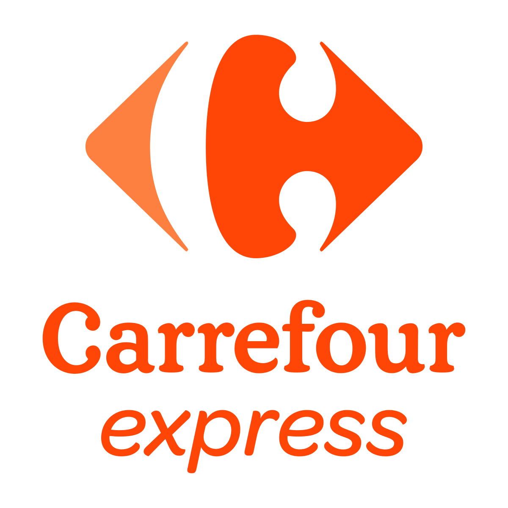

Bienvenue Welcome
Nous sommes heureux de vous accueillir dans notre Gîte au Cœur des Champs. Vous trouverez dans ce guide quelques informations utiles à votre séjour, ainsi que des instructions de départ.
Nous vous souhaitons un agréable séjour et une belle découverte de notre région.
Noémie & Teddy
We are delighted to welcome you to our Gîte au Cœur des Champs. In this guide, you will find some useful information for your stay, as well as check-out instructions.
We wish you a pleasant stay and a wonderful discovery of our region.
Noémie & Teddy
Téléphone · WhatsApp Phone · WhatsApp
+33 6 69 93 96 33
Utiliser la télé Using the TV
La télé passe par un boîtier Fire TV Stick. Merci de ne pas toucher aux branchements derrière la télé ni à la box 5G. En pleine campagne le signal peut être un peu faible, mais rien n'y changera — tout a déjà été optimisé.
The TV runs through a Fire TV Stick. Please don't touch the cables behind the TV or the 5G box. Out in the countryside the signal can be a little weak, but nothing will change it — everything has already been optimised.
Allumer la télé Turning on the TV
Appuyez sur le bouton ON ❶ en haut de la télécommande, puis patientez quelques secondes. L'allumage peut être un peu lent, c'est normal.
Press the ON button ❶ at the top of the remote, then wait a few seconds. It can be a little slow to start — that's normal.
Les applications The apps
TF1 & M6 TF1 & M6
Autres chaînes · TNT Other channels · TNT
TF1 et M6 : passez par leurs applications dédiées. Pour toutes les autres chaînes publiques ou de la TNT, utilisez l'application Molotov.
TF1 and M6: use their dedicated apps. For all other public or TNT channels, use the Molotov app.
Consommation locale Local Products
Les Bons Légumes de Sophie
Cintheaux, 14180
À 2 min à pieds en sortant de la cour, tournez à gauche. Légumes locaux et de saison de notre voisine maraîchère Sophie d'Hoine. Le distributeur est ouvert 24h/24 et 7j/7. Voir tarifs sur place.
2 minutes on foot from the courtyard, turn left. Local and seasonal vegetables from our neighbor Sophie d'Hoine, a market gardener. The vending machine is open 24/7. See prices on site.
Cidre & Jus de Pomme artisanaux Artisanal Cider & Apple Juice
Versainville, 14700
Nous mettons à votre disposition des bouteilles de Jus de Pomme et Cidre artisanaux. Les pommes sont récoltées et pressées localement par nos amis C. & B. dans leur ferme de Versainville, à 20 km d'ici.
We offer artisanal Apple Juice and Cider bottles for purchase. The apples are harvested and pressed locally by our friends C. & B. at their farm in Versainville, 20 km from here.
| Produit Product | Prix |
|---|---|
| Jus de Pomme (1 L) Apple Juice (1 L) | 3 € |
| Cidre (75 cl) Cider (75 cl) | 2,20 € |
|
Pommeau
Liqueur normande à base de jus de pomme et de Calvados, vieillie en fûts de chêne. Douce, fruitée, servie en apéritif.
Norman liqueur made from apple juice and Calvados, aged in oak barrels. Sweet, fruity, served as an aperitif.
|
10 € |
| Vinaigre de cidre Cider vinegar | 4 € |
Marchés locaux Local Markets
Une excellente manière de découvrir la Normandie : ses producteurs, ses fromages, son cidre, ses produits de saison. Voici les marchés que nous recommandons autour du gîte.
A wonderful way to discover Normandy: meet local producers, taste cheeses and cider, find seasonal produce. Here are the markets we recommend around the gîte.
Saint-Sylvain
6 min 6 minMercredi · 8h – 13h · Toute l'année Wednesday · 8am – 1pm · Year-round
Parc de la Vallée, Rue Saint-Martin des Bois, 14190 Saint-Sylvain
Tout petit marché de village (une dizaine d'exposants), parfait pour un panier rapide en milieu de semaine. Les horaires peuvent varier selon la météo et la saison.
A very small village market (around ten stalls), perfect for a quick midweek basket. Hours may vary with weather and season.
Bretteville-sur-Laize
5 min 5 minJeudi · 7h30 – 13h Thursday · 7:30am – 1pm
Place de la Mairie, 14680 Bretteville-sur-Laize
Petit marché de proximité avec maraîchers, fromages et produits artisanaux du Calvados.
A small neighborhood market with vegetables, cheeses and Calvados artisanal products.
Caen · Place Saint-Sauveur
20 min 20 minVendredi · 8h – 13h Friday · 8am – 1pm
Place Saint-Sauveur, 14000 Caen
Le marché le plus emblématique de Caen, dans une belle place pavée du centre historique.
Caen's most iconic market, set on a beautiful cobblestone square in the historic center.
Falaise
15 min 15 min ★ Notre préféré ★ Our favoriteSamedi · 8h – 13h Saturday · 8am – 1pm
Sous et autour de la Halle, centre-ville Under and around the covered market, town center
Le grand marché du samedi : près de 80 commerçants, légumes de saison, fruits, miel, confitures, fromages normands, poisson, fleurs… À combiner avec une visite du Château Guillaume-le-Conquérant.
The big Saturday market: around 80 vendors with seasonal vegetables, fruit, honey, jams, Norman cheeses, fish and flowers. Combine it with a visit to William the Conqueror's Castle.
Caen · Place Courtonne
20 min 20 minDimanche matin · 8h – 13h Sunday morning · 8am – 1pm
Place Courtonne, 14000 Caen
Le marché du dimanche matin à Caen, parfait pour flâner avant le déjeuner. Producteurs, fromagers, poissonniers et stands gourmands.
Caen's Sunday morning market, perfect for a relaxed stroll before lunch. Local producers, cheesemakers, fishmongers and gourmet stalls.
Courses alimentaires Grocery Shopping
U Express
€€ 5 min 5 minCd 23, D23 Zone Artisanale, 14680 Bretteville-sur-Laize

Carrefour Express
€€€ 6 min 6 min11 Rue du Dix Huit Juillet 44, 14190 Saint-Sylvain
E.Leclerc IFS
€ 10 min 10 min190 Rue de Rocquancourt, 14123 Ifs
Recommandé pour les grandes courses Recommended for major shopping
Urgences médicales Medical Emergencies
Pharmacie de Saint-Sylvain
6 min en voiture 6 min by car7 Bis Rue Saint-Martin des Bois, 14190 Saint-Sylvain
Centre Médical Fleury-sur-Orne
~15 min en voiture ~15 min by car7j/7, sans rendez-vous · 9h–20h 7 days/week, no appointment · 9am–8pm
Place de la République, 14123 Fleury-sur-Orne
SOS Médecins Caen
15 min (ou à domicile) 15 min (or home visit)Centre Caen Guérinière Caen Guérinière Center
Urgences CHU Caen
Appelez le 15 avant de vous rendre aux urgences.
Call 15 before going to the emergency room.
CHU de Caen · Av. de la Côte de Nacre, 14000 Caen (20 min en voiture20 min by car)
📞 15Instructions de départ Checkout Instructions
Merci pour votre séjour ! Nous espérons que vous avez passé un moment agréable dans notre gîte normand. Pour faciliter votre départ et l'accueil des prochains visiteurs, voici quelques consignes simples :
Thank you for your stay! We hope you had a wonderful time at our Norman cottage. To make your departure smooth and prepare for our next guests, please follow these simple guidelines:
CuisineKitchen
- —Lavez et rangez la vaisselle utilisée
- —Laissez la cuisine propre et en ordre
- —Wash and put away any dishes you used
- —Leave the kitchen clean and tidy
ChambresBedrooms
- —Laissez les draps utilisés en place sur les lits
- —Aérez les lits en relevant les couvertures
- —Notre équipe de ménage se chargera du linge
- —Leave the used sheets on the beds
- —Air out the beds by pulling back the covers
- —Our housekeeping team will take care of the linens
Avant de partirBefore you leave
- —Vérifiez tous les tiroirs et rangements
- —N'oubliez rien de personnel
- —Check all drawers and storage areas
- —Make sure you haven't left any personal belongings
En cas de problèmeIn case of issues
Si vous avez cassé ou endommagé quelque chose, merci d'en parler à Noémie. Pas de souci, cela peut arriver à tout le monde ! Une solution à l'amiable est toujours possible, et c'est bien plus simple pour tout le monde que de passer par un contentieux Airbnb.
If you broke or damaged something, please let Noémie know. Don't worry, these things happen! We can always sort it out between us, which is much simpler for everyone than going through an Airbnb dispute.
Votre avis compteYour review matters
Pensez à nous laisser un avis sur la plateforme. Vos commentaires nous aident énormément à améliorer l'expérience.
Please remember to leave us a review on the platform. Your feedback helps us tremendously to improve the experience.
Bon voyage et merci encore. Safe travels, and thank you.